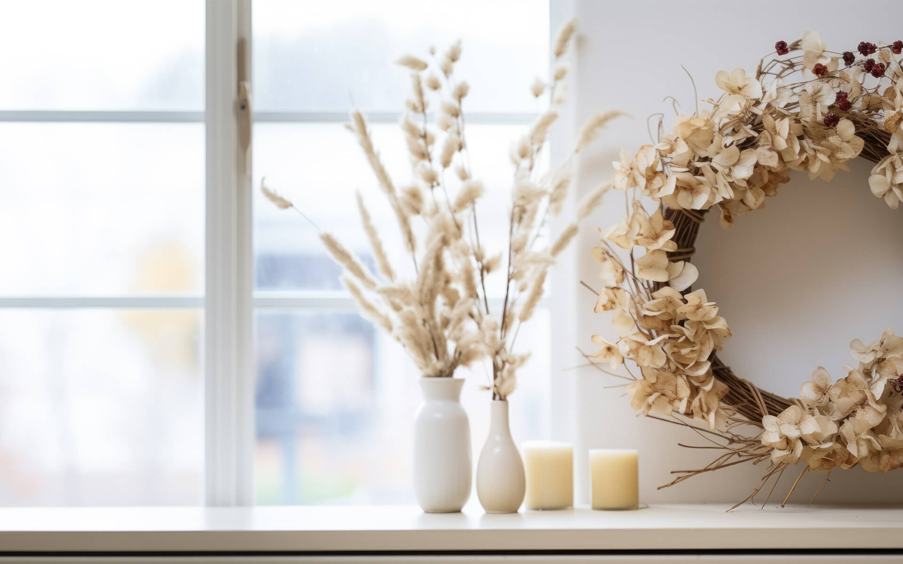

ドライフラワーのある生活で暮らしを豊かに
アンティークな雰囲気を持ったドライフラワーは、インテリアとして生活や彩るだけでなく香りを楽しむこともできます。
あなたの暮らしにもドライフラワーを取り入れてみませんか？
ドライフラワーのある生活で暮らしを豊かに
アンティークな雰囲気を持ったドライフラワーは、インテリアとして生活や彩るだけでなく香りを楽しむこともできます。
あなたの暮らしにもドライフラワーを取り入れてみませんか？
趣味でドライフラワー作りを始め、現在はドライフラワー作家として活動しています。
インテリアとしてではなく、お誕生日や記念日等、お祝い用のフラワーアレンジメントも行っています。